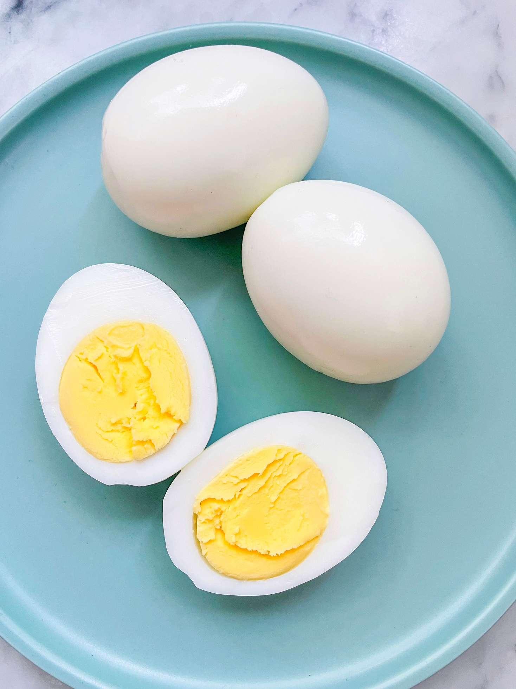

Boiled Egg

Description
Boiled eggs are eggs, typically from a chicken, cooked with their shells unbroken, usually by immersion in boiling water. Hard-boiled eggs are cooked so that the egg white and egg yolk both solidify, while soft-boiled eggs may leave the yolk, and sometimes the white, at least partially liquid and raw.
Things you'll need
- A pot with a lid
- Eggs
- Water
Steps
- Boil water in a cooking pot.
- Slowly place the egg in the water, you can use a spoon or ladle to drop the eggs without breaking it.
- Start a timer for the desired doneness
- 6 min - Runny Yolk
- 8 min - Soft Boiled
- 10 min - Hard Boiled
- 15 min - Well Done
- When the desired doneness is reached, place the eggs in cold running water for a few minutes to avoid overcooking.
- Peel the eggs and viola, its ready to be served.